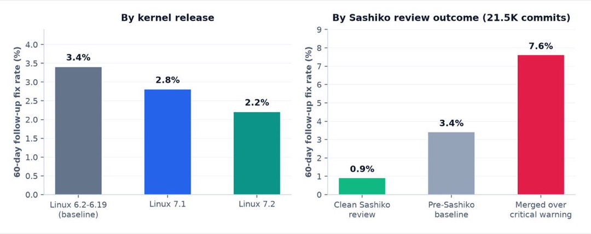
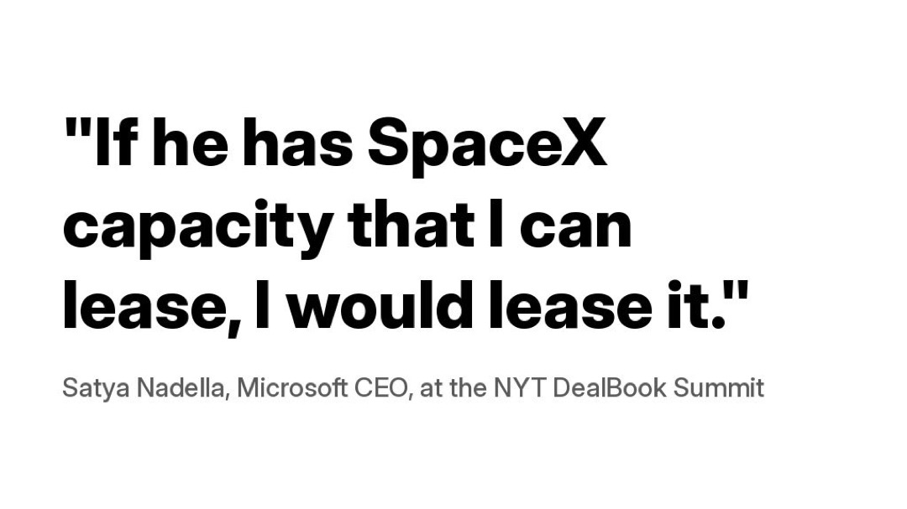
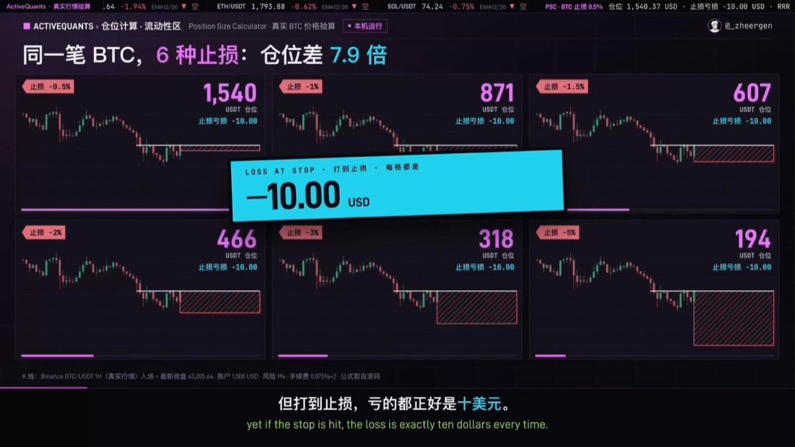
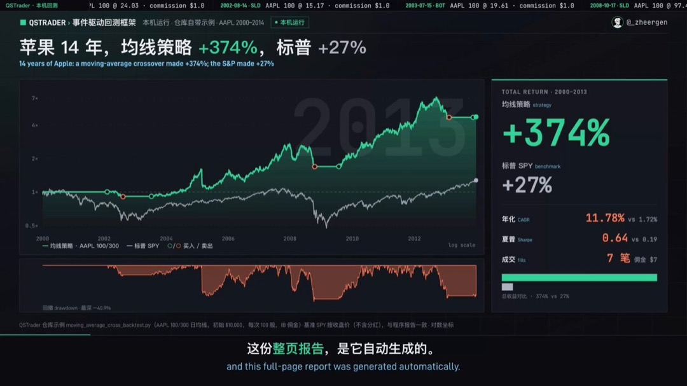
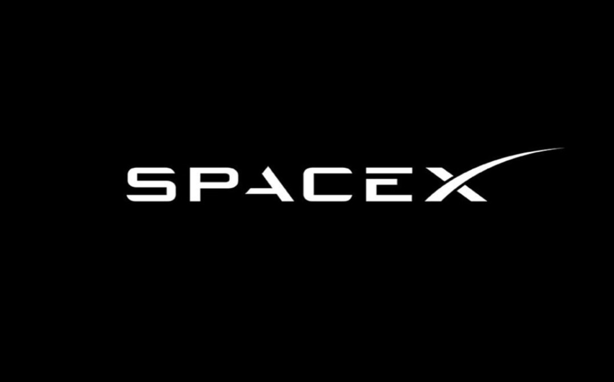
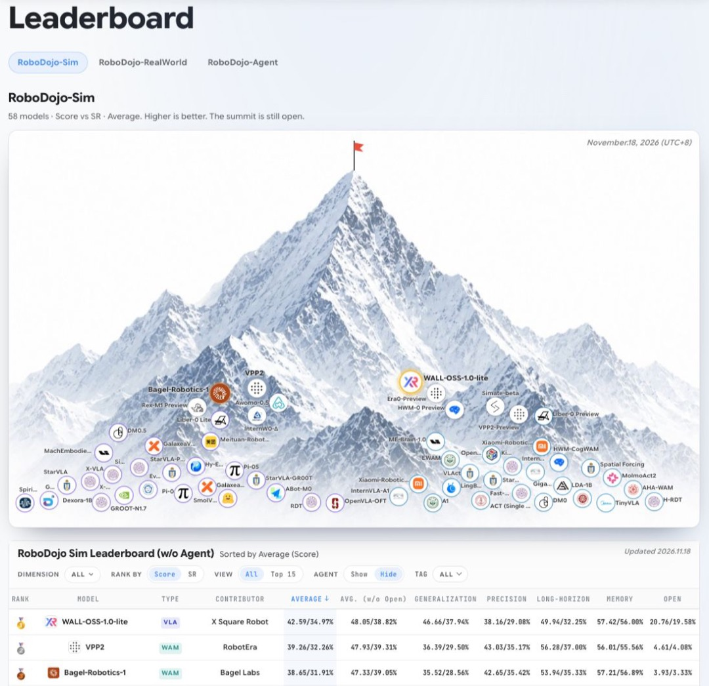
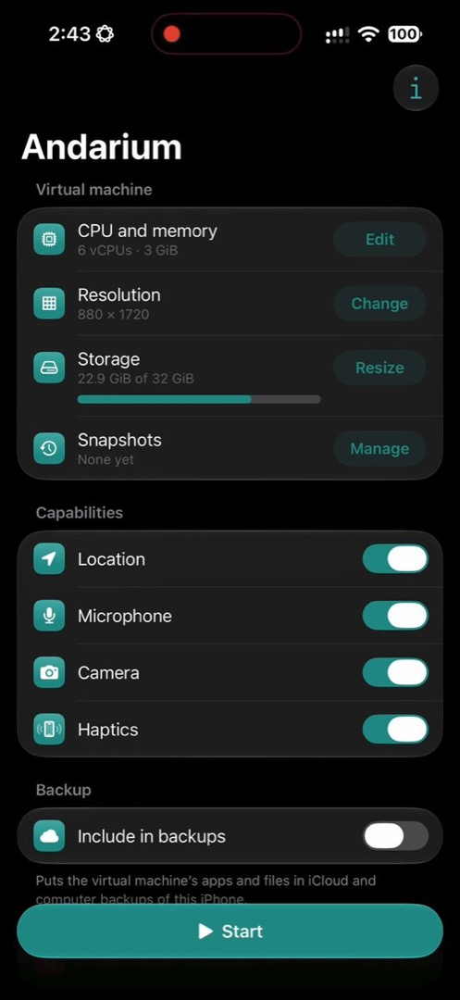

本期速览
01 Sashiko 内核审查 7 个月数据
02 Slack Moji 浏览器本地跑生图
04 Pine Script 流动性区仓位计算
05 SpaceX 月增 500MW 算力
08 Andarium 让 iOS 跑安卓应用
09 Anthropic 813 亿美元 IPO
01｜Sashiko 内核审查 7 个月数据
来源（X） · @meow2149 · 2026-11-19 13:26
Sashiko 把专项检查分给多个 Agent 并行做，存疑的问题再交给专门的 Agent 逐项复核。确认问题或排除问题，都要拿出代码证据。审查邮件只发往维护者主动加入的内核邮件列表。

02｜Slack Moji 浏览器本地跑生图
来源（X） · @ChuckBass8808 · 2026-11-19 14:05
应用：Slack Moji（Space：cfahlgren1/slack-moji | Likes：55 | SDK：static） 定位：基于 Tessera-small 的轻量级文本到图像生成应用，采用 WebGPU + ONNX Runtime Web，将扩散模型推理直接搬到浏览器端。
[01] 核心架构与关键技术
1. 模型侧采用 Tessera-small，底层是 8-bit 量化 ONNX Denoiser，搭配 OpenAI CLIP ViT-B/32 文本编码器。文本编码器使用 FP32 计算，模型总计约 115 MB，通过 onnxruntime-web 加载。
2. 推理侧使用 WebGPU 调度浏览器本地 GPU，16 步 Masked Diffusion 采样器由原版 Tessera 实现移植到 JavaScript。一次输入生成四张 16×16 Emoji 变体，不需要将提示词或生成数据发送到服务器。
[02] 工程取舍与落地价值
它没有追求高分辨率和复杂生成效果，而是把模型体积、推理算力和部署成本压缩到浏览器可承载的范围。对于想做端侧生成、隐私优先的 AI Web 应用，以及研究 ONNX 模型浏览器化部署的工程师，这套架构很值得拆解。
体验地址：https://huggingface.co/spaces/cfahlgren1/slack-moji
03｜微软表态愿租 SpaceX 算力
来源（X） · @SpaceInvestor_D · 2026-11-19 08:29
中文译文
$SPCX：Satya Nadella 表示 Microsoft 将租赁 SpaceX 的算力。
在 DealBook 上被问及 Musk 关于太空数据中心的观点是否正确时：
"如果他有 SpaceX 的算力容量可以让我租，我会租的。"
原文
$SPCX: Satya Nadella says Microsoft would rent SpaceX compute.
Asked at DealBook whether Musk is right about data centers in space:
"If he has SpaceX capacity that I can lease, I would lease it."

04｜Pine Script 流动性区仓位计算
来源（X） · @_zheergen · 2026-11-19 14:05
一套专门寻找放量却不涨跌的潜在资金密集区，另一套直接计算该买多少、止损多少、盈亏比多少！
作者 MarcosACH，两个项目均采用 Pine Script v6、MPL-2.0 许可，源码全部公开。
以前找到了交易机会，还要自己计算仓位和风险。现在可以把区域分析和资金管理放在同一套研究流程里。
核心能力：
Liquidity Zones｜流动性区域
1️⃣ 放量缩波：成交量超过均量设定倍数，同时短期波动明显收缩，自动标记区域。
2️⃣ 多周期分析：支持切换分析周期，观察不同级别的成交量与波动变化。
3️⃣ 区域合并：连续出现信号时合并成交量，减少重复标记。
4️⃣ 自动提醒：仅在 K 线收盘确认后触发信号，减少盘中变化造成的干扰。
https://github.com/MarcosACH/liquidity-zones
Position Size Calculator｜仓位计算器
1️⃣ 仓位计算：根据账户资金、单笔风险、入场价和止损价计算交易数量。
2️⃣ 盈亏比分析：自动计算潜在盈利、亏损及 Risk/Reward Ratio。
3️⃣ 交易成本：支持手续费设置和账户币种转换。
4️⃣ 可视化风控：直接在 K 线上显示入场、止损、止盈和仓位信息。
https://github.com/MarcosACH/position-size-calculator
这两个工具放在一起挺实用。
比如 BTC 出现异常放量、波动收缩，先标记需要观察的区域，再根据止损距离计算合理仓位，而不是凭感觉决定买多少。
做 TradingView、Pine Script、股票或 Crypto 交易研究的，这两套源码值得收藏！

引用内容
爱吃折耳根的Ace @_zheergen
QSTrader，一套基于 Python 的事件驱动股票量化回测框架，由 QuantStart 团队开发。
它不只是测试买卖信号，而是把行情处理、策略执行、订单模拟、投资组合和绩效分析拆成独立模块，更接近真实量化系统的设计方式。
核心亮点：
1️⃣ 事件驱动引擎：通过事件处理行情与交易信号，方便研究策略执行流程。
2️⃣ 多级别回测：支持 OHLCV K 线和 Tick 级买卖报价数据，研究不同频率的股票策略。
3️⃣ 策略开发：提供 Buy & Hold、均线交叉等示例，可以直接修改交易规则。
4️⃣ 模拟交易：跟踪股票持仓、组合资金和订单成交，支持北美股票佣金模型。
5️⃣ 绩效分析：自动生成资金曲线、最大回撤、月度收益热力图和交易统计。
6️⃣ 模块化扩展：策略、数据、组合和执行组件可以独立修改，也支持接入私有策略代码。
我觉得它最值得研究的不是某个交易策略，而是整个事件驱动架构。
比如测试苹果股票的 100/300 日均线策略，从生成信号到模拟交易，再到最终绩效报告，都能沿着源码研究。
做 Python 量化、美股策略、事件驱动回测，或者想自己开发交易引擎的，这套源码值得收藏！
https://github.com/quantstart/qstrader

05｜SpaceX 月增 500MW 算力
来源（X） · @marsrepublica · 2026-11-19 12:39
中文译文
Elon 今天在 DealBook 和 TomorrowX Summit 发表了两场演讲，揭示的 SpaceX 计划比大多数财报电话会议还多。以下是 11 个关键要点：
1. SpaceX 正在以非凡的速度扩展 AI 算力：
SpaceX 每月新增约 500 MW，相当于 220,000 个 GB300。Elon 预计到 2027 年底每月超过 1 GW：目前年化速度为 6 GW，将翻倍至 12 GW。
2. 其建设成本远低于行业估计：
Elon 表示外部估计偏差高达 2 倍，SpaceX 的建设成本约为行业成本的 60%。其内部团队 "Army X" 负责建设数据中心，Tesla Megapack 则用于稳定训练电力供应。我之前已经在模型中假设 SpaceX 有 25–30% 的成本优势。
3. Anthropic 可能成为 10 GW 的客户：
Anthropic 告诉 Elon，最可能的结果是在现有容量之外再从 SpaceX 租赁 10 GW。合同允许提前 3–6 个月通知终止，但 Anthropic 表示继续合作 "极有可能"。这进一步印证了我的模型，即 Anthropic 将承接大部分即将到来的容量。
4. SpaceX 正在瞄准一个大得多的电信市场：
Elon 认为 AT&T 和 Verizon 不会因为带宽需求爆发而消失。人类的通信速率约为每秒 100 比特，而超级智能和机器人可能需要一万亿比特。SpaceX 瞄准的是一个比现有电信收入大几个数量级的市场，正如我之前建模的那样。更有趣的是，这为推动其 AI 业务创造了机会。
5. 其下一代卫星网络将于明年到来：
Direct to Cell V2 的带宽是 V1 的 40 倍。使用 800 MHz 的微型基站和外观类似 Starlink 天线的屋顶设备将扩展室内覆盖，屋顶硬件明年开始投产。Starlink 正在成为一家全面运营的运营商。
6. SpaceXSI 重建了其完整的 AI 软件栈：
在六到八个月内，它用 C 和 C++ 从零开始重写了训练、强化学习和推理，贴近底层。Elon 认为其"可能拥有世界上最好的训练栈软件"。Grok 4.8 也是为实用性而非基准测试领先地位而构建的，这对 Grokbot 来说很棒。
7. Terafab 可能成为地球上最大的项目：
该设施计划达到 1 亿平方英尺，第一阶段的量产目标定在 2028 年底。Elon 表示由于巨额资本支出，老牌芯片制造商规避风险，而 SpaceX 将承担风险并快速迭代，力争在 2028 年前实现更好的芯片工艺。
8. Optimus 正在向工业工作迈进：
Elon 预计一两个月内会有非彩排演示，并表示 Optimus 可以在 12–18 个月内洗碗。其首个重要工业角色将是为国家安全开采和精炼矿石。
9. Tesla 与 SpaceX 的合并变得越来越合乎逻辑：
Elon 表示，随着 AI 和机器人使两家公司越来越接近，合并对双方"可能"更好。两家公司都有 AI 软件团队和先进芯片设计能力，而超级智能算力最终可能进入轨道运行。由股东决定；Elon 表示他不应该仅仅因为合并两家公司就获得奖项。
10. Ship 42 可能加速整个 Starship 复用计划：
Ship 42 只需要少量修复就可以再次飞行，但 SpaceX 将其退役用于公开展示。这使快速复用更加接近现实。
11. SpaceX 正在瞄准每年为太空生产 200 GW 的太阳能：
这大约相当于美国平均用电量的 40%。其 Starmind 计算单元以大约 Vera Rubin NVL72 机架四分之一的尺寸提供相同的能力，这在太空中是一个胜利。Elon 表示它也比已经投产的 Starlink V3 更简单。
简而言之，SpaceX 正在以前所未有的规模，在短短几年内建设一个年收入万亿美元的业务。
这些数字中许多我已经在过去几个月里建模并分享过。昨天的公告使这些预测更加接近现实。
即将到来的规模是惊人的！
原文
Elon gave two talks today at DealBook and TomorrowX Summit, revealing more about SpaceX's plans than most earnings calls. Here are the 11 key takeaways:
1. SpaceX is scaling AI compute at an extraordinary pace:
SpaceX is adding roughly 500 MW monthly, equivalent to 220,000 GB300s. Elon expects over 1 GW monthly by end-2027: a 6 GW annualized pace today, doubling to 12 GW.
2. Its build costs are far below industry estimates:
Elon says outside estimates are off by up to 2x, with SpaceX building at roughly 60% of industry costs. Its in-house "Army X" builds the data centers, while Tesla Megapacks smooth training power. I'd already been modeling a 25–30% SpaceX cost advantage.
3. Anthropic could become a 10 GW customer:
Anthropic told Elon its most likely outcome is renting another 10 GW from SpaceX, on top of existing capacity. Contracts allow termination with 3–6 months' notice, but Anthropic says staying is "extremely likely." This reinforces my model that Anthropic will take most upcoming capacity.
4. SpaceX is targeting a vastly larger telecom market:
Elon argues AT&T and Verizon won't disappear as bandwidth demand explodes. Humans communicate at roughly 100 bits per second, while superintelligence and robots could require a trillion. SpaceX is targeting a market orders of magnitude larger than existing telecom revenue, as I'd modeled. Even more interestingly, this creates an opportunity to push its AI business further.
5. Its next-generation satellite network arrives next year:
Direct to Cell V2 launches with 40x V1's bandwidth. Micro cell towers using 800 MHz and rooftop units resembling Starlink dishes will extend indoor coverage, with rooftop hardware entering production next year. Starlink is becoming a full scale carrier.
6. SpaceXSI has rebuilt its entire AI software stack:
Over six to eight months, it rewrote training, reinforcement learning, and inference from scratch, close to the metal in C and C++. Elon thinks it "might have the best training stack software in the world." Grok 4.8 is also being built for practical usefulness rather than benchmark leadership, which is great for Grokbot.
7. Terafab could become the largest project on Earth:
The facility is planned to reach 100 million square feet, with phase-one volume production targeted for late 2028. Elon says established chipmakers are risk-averse because of massive capex, while SpaceX will take risks and iterate rapidly toward a better chip process by 2028.
8. Optimus is moving toward industrial work:
Elon expects an unstaged demonstration in a month or two and says Optimus could do dishes within 12–18 months. Its first major industrial role will be mining and refining ore for national security.
9. A Tesla–SpaceX merger is becoming increasingly logical:
Elon says the companies are "probably" better together as AI and robotics bring them closer. Both have AI software teams and advanced chip-design capabilities, while superintelligence compute could eventually move into orbit. Shareholders will decide; Elon says he shouldn't receive an award simply for merging them.
10. Ship 42 could accelerate the entire Starship reuse program:
Ship 42 needed only minor repairs before flying again, but SpaceX is retiring it for public display. This brings rapid reuse much closer.
11. SpaceX is targeting 200 GW of annual solar manufacturing for space:
That's roughly 40% of average US electricity consumption. Its Starmind compute unit delivers the same capability at roughly a quarter the size of a Vera Rubin NVL72 rack, which is a win in space. Elon says it's also simpler than Starlink V3, which is already in production.
Simply put, SpaceX is building toward a trillion-dollar annual revenue business within just a few years, at scale never seen before.
Many of these numbers I've already modeled and shared over the past few months. Yesterday's announcements bring those projections closer to reality.
The scale of what's coming is extraordinary!

06｜Bagel 机器人模型进三甲
来源（X） · @bageldotcom · 2026-11-19 00:55
中文译文
我们很高兴地分享，我们最新的开源权重机器人模型 Bagel-Robotics-1 在 RoboDojo 基准测试中在独立机器人模型中排名全球第三。
RoboDojo 团队按照他们自己的标准独立评估了我们的模型。他们的全球基准测试衡量 AI 模型的实用性，被 Anthropic 等行业领导者使用。
Bagel-Robotics-1 在 RoboDojo 的标准泛化测试中成功率并列第一，该测试衡量模型处理未训练过场景的能力。
感谢 RoboDojo 团队构建了这个基准。我们很快将跟进发布技术报告和真实机器人演示。
https://robodojo-benchmark.com/leaderboard?bench=sim#robodojo
原文
We’re proud to share that Bagel-Robotics-1, our new open-weight robotics model, just ranked No. 3 worldwide among standalone robotics models on the RoboDojo benchmark.
The RoboDojo team evaluated our model independently according to their standards. Their global benchmark tests how useful AI models are and is used by industry leaders like Anthropic.
Bagel-Robotics-1 also tied for No. 1 by success rate on RoboDojo’s standard generalization tests, which measure how well a model handles scenarios it wasn’t trained on.
Thanks to the RoboDojo team for building the benchmark. We will follow up with a technical report and a real robot demonstration soon.
https://robodojo-benchmark.com/leaderboard?bench=sim#robodojo

07｜阿里与英伟达芯片风波关联
来源（X） · @nytchinese · 2026-11-19 14:00
08｜Andarium 让 iOS 跑安卓应用
来源（X） · @imxieyi · 2026-11-19 01:57
中文译文
Andarium：iOS 上的 Android 模拟器，现已在 App Store 上线！
https://apps.apple.com/us/app/andarium/id6827505184
它不仅能够运行现代 arm64 Android 应用，还能运行许多遗留的 arm32 应用。得益于底层运行的真实 Linux 内核，Winlator 和 Termux 等高级应用也能运行。
原文
Andarium: the Android emulator for iOS, is now available on App Store!
https://apps.apple.com/us/app/andarium/id6827505184
It runs not only modern arm64 Android apps, but also many legacy arm32 apps. Thanks to a real Linux kernel running under the hood, advanced apps like Winlator and Termux can also run.

09｜Anthropic 813 亿美元 IPO
来源（X） · @SCMPNews · 2026-11-19 13:56
中文译文
Anthropic 创纪录的 813 亿美元 IPO 为美国 AI 巨头装备了与中国对手打价格战的能力
https://sc.mp/weq2e
原文
Anthropic’s record US$81.3 billion IPO arms US AI giant for price war with Chinese rivals
https://sc.mp/weq2e